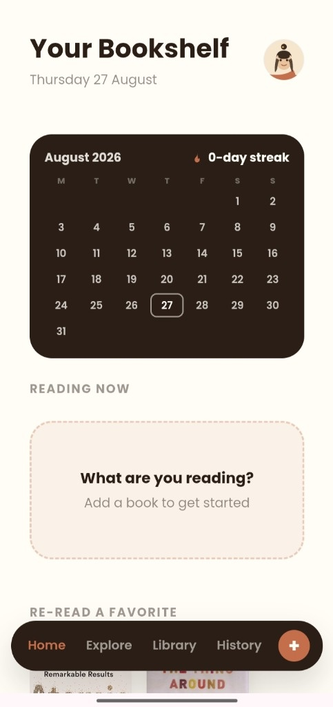
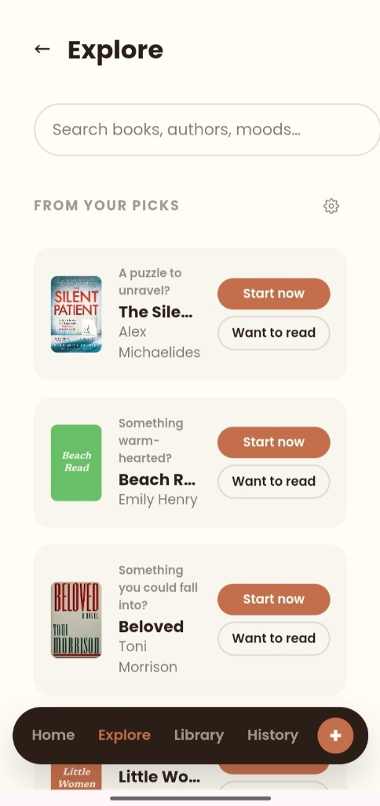
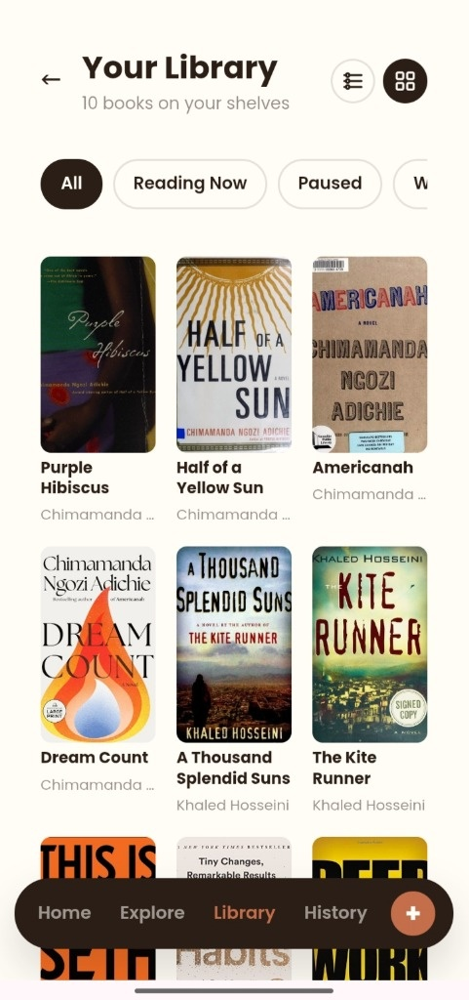
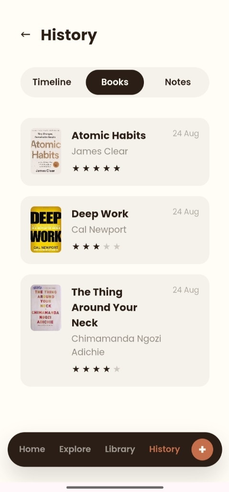
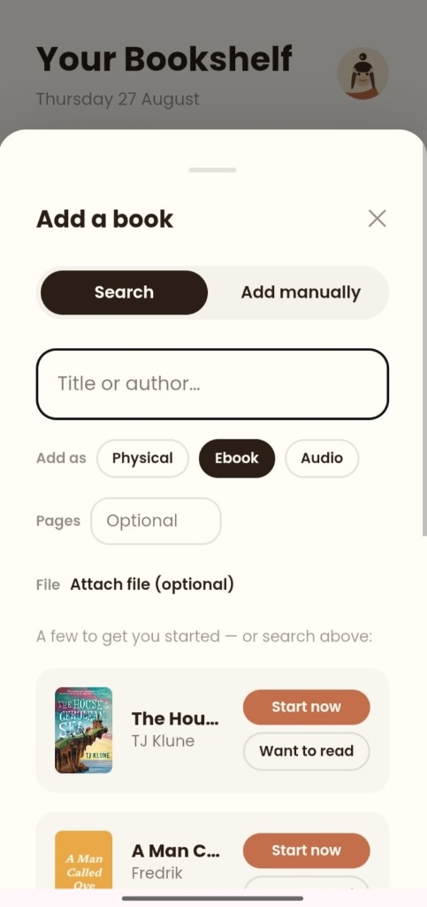
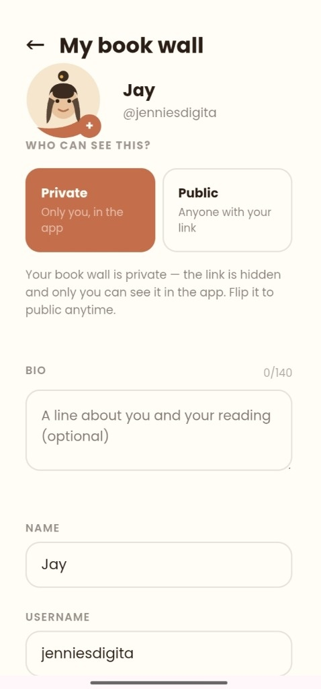
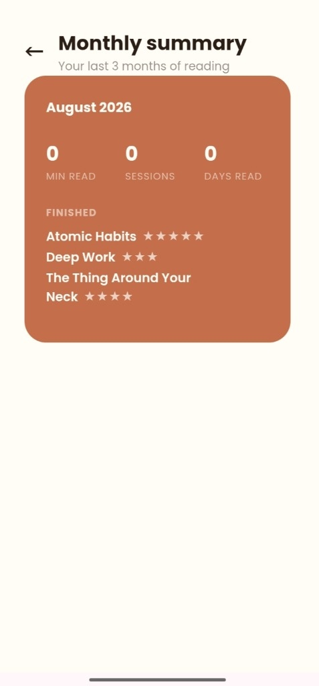
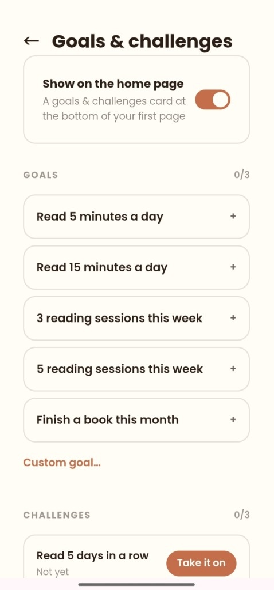

Watch it in action
Explore the mobile screens and interaction flows of the Soda Reader experience.








The idea
I built Soda around a problem I kept seeing: people don't necessarily stop loving books because they stop caring about reading. They struggle to maintain the habit, discover what to read next, and remember what they just read.
Most reading products focus on helping people consume books. I wanted to explore what a product designed around enjoying, sustaining, and remembering the reading experience could look like.
That led to Soda: a reading platform designed to make reading feel more engaging while helping readers build a lasting relationship with what they read.
The research
Before building, I wanted to understand why people read less, what existing reading products were missing, and where there might be an opportunity to build something meaningfully different.
I looked through:
What I found
Reading isn't just a discovery problem
People can find books. The harder problem is maintaining the motivation to actually read them.
Lapsed readers are an overlooked opportunity
There is a large group of people who want to read more but have fallen out of the habit.
Fiction retention is underserved
Existing tools often focus on productivity, highlights, notes, or knowledge retention rather than helping fiction readers remember and engage with what they read.
People want reading to feel personal
Discovery, recommendations, mood, progress, and social identity can make the experience feel more like their reading life.
The opportunity
Who I built it for
Lapsed Readers
People who used to read regularly but have gradually fallen out of the habit and want to get back into it.
“I want to read more, but I can't seem to stick with it.”
Motivation, discovery, accountability, and a more engaging reading experience.
How it works
Discover
Personalized book discovery based on your own interests, categories, mood, and reading behavior, not based on what's popular online.
Read
A built-in reading experience that keeps the reading activity inside Soda. As well as a companion experience where you can put your phone in focus mode and read a physical book and track the time too as well as leave notes.
Track
Streaks, reading time, history, progress, and your personal library.
Reflect
Ratings, moods, notes, and eventually AI-powered recall/conversation around books.
Return
Personalized recommendations, notifications, and progress loops designed to give readers a reason to come back.
What I built
Reading experience
Built the core reading interface and book library experience.
Personalized discovery
Designed the Explore experience around helping readers discover books relevant to them.
Reading habit system
Built streaks that had generous grace periods, timers, history, progress tracking, and reading activity.
Reader profiles
Created profiles, public and private book walls, avatars, personal ratings, and mood-based reading identity.
Search & library
Built book discovery through title, author, and category search alongside personal library management.
AI reading features
Explored AI-powered recall and book conversation as part of the product experience.
The positioning
Reading apps already exist. So the question wasn't simply “How do I make another reading app?”
It was: “Why would someone choose Soda instead of Kindle, Goodreads, Audible, Readwise, or simply reading a book on their own?”
The direction
Soda isn't trying to be another place to store books. It's designed to make the act of reading itself more engaging.
“For people who want to read more but struggle to make reading stick, Soda is a reading companion that works at your pace and turns reading into a habit worth returning to anytime without guilt.”
The stack
Built with:
What I learned
Building a full product from scratch doesn't mean starting with features
Soda taught me how much product direction can change when you spend time understanding the user's actual problem first. I started with the broad idea of making reading more fun, but research pushed me toward a more specific opportunity: people who want to read but have lost the habit. The desire is there but the motivation isn't because of guilt, time, social pressure and other factors.
Differentiation through underserved problems
It also taught me that differentiation isn't necessarily about inventing something nobody has seen before. It can come from combining familiar capabilities around an underserved problem and giving the product a clearer reason to exist.